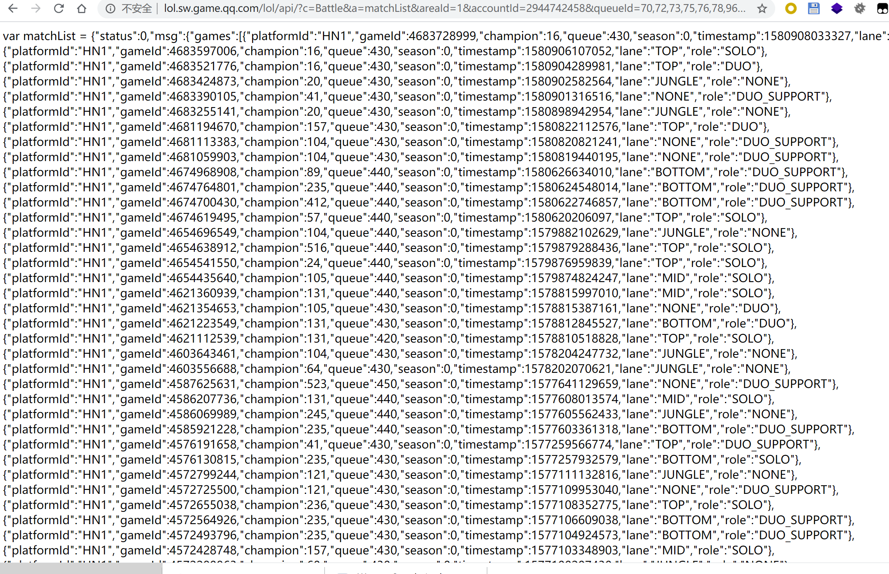
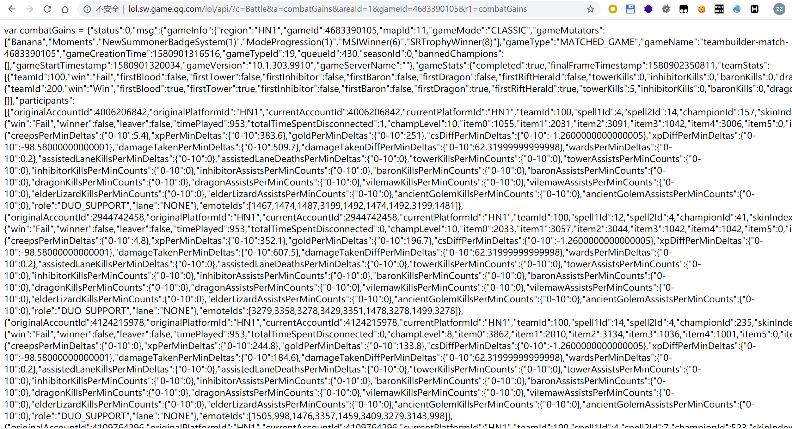
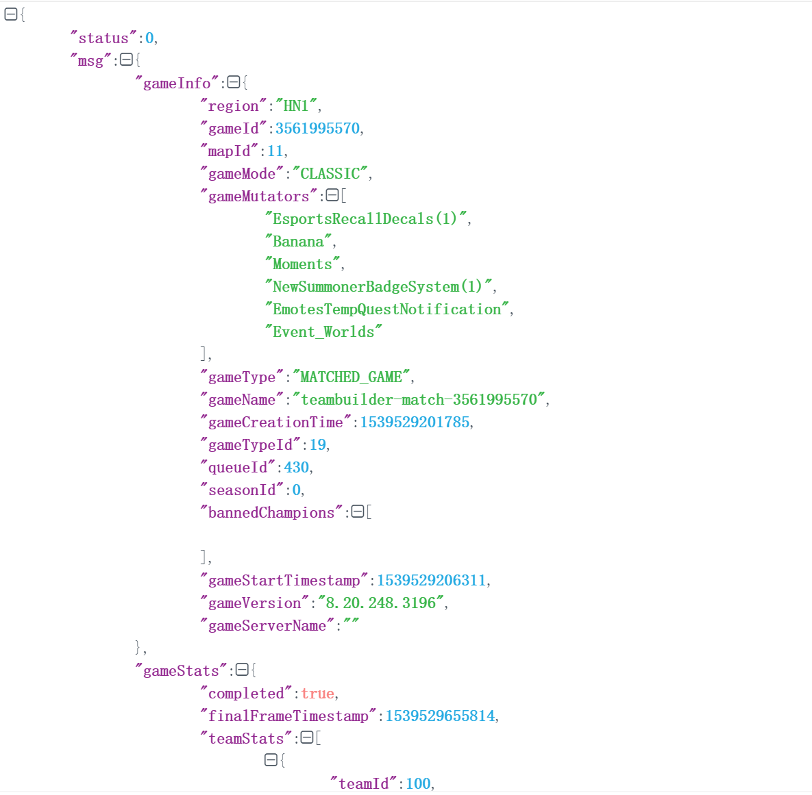

(本文首发于星盟安全团队微信公众号,链接:https://mp.weixin.qq.com/s/85gX5ci1ih9Mb9tPIx45tg ,并由团队发表至secpulse,链接:https://www.secpulse.com/archives/126641.html)
update:2020.4.2:文章竟然被云舒大神转发了.开心!!
原本假期计划是打两个星期游戏再随便折腾点好玩的.但可惜,假期余额不断充值到账,游戏也给我打腻了.于是顺着游戏里小伙伴的撕逼开始了抓内鬼之旅,让👴来看看到底是谁让我上不了王者:D.
爬数据
最初打算是使用wegame的查询召唤师接口,但是没找到web端且只记录半年的数据,不方便抓包(懒得用wireshark分析).
然后去翻翻有没有现成的轮子,看到掌盟上已经有人做过类似的工作,还真有.
https://zhuanlan.zhihu.com/p/71549580
爬掌盟脚本都是现成的,但是掌盟只记录了350场,还被无限火力,大乱斗场次给污染了.代码写到一半放弃了.
继续翻着翻着,然后在某个论坛找到了英雄联盟官网有详细的对战数据,而且不记录大乱斗,无限火力等娱乐模式,只记录匹配,排位与人机.我看了下自己的账号最早的场次记录时间在2018年4月.有一点缺陷是只能看自己的所在的游戏,不能查询其他玩家,那就只能登陆自己和小伙伴的号一个一个来.
QQ的模拟登陆不好做,好在账号就四五个,登录手动复制Cookie更加方便.
入口找到了.动手抓包.
发现它是先请求一次获得全部的比赛记录,再根据需求动态加载具体数据.这里accountId每个账号不同,全局搜索一下流量就能看到了.每个账号只能获取自己账号的数据,填别人的账号无效.
http://lol.sw.game.qq.com/lol/api/?c=Battle&a=matchList&areaId=1&accountId=2944742458&queueId=70,72,73,75,76,78,96,98,100,300,310,313,317,318,325,400,420,430,450,460,600,610,940,950,960,980,990,420,440,470,83,800,810,820,830,840,850&r1=matchList

这个号一共上千场比赛记录.需要获取其中的gameId参数,拼接到查询具体场次的api中.
http://lol.sw.game.qq.com/lol/api/?c=Battle&a=combatGains&areaId=1&gameId=4683390105&r1=combatGains

格式化可以清晰的看到各种数据:

很简单,写个脚本把所有数据都爬了.爬虫脚本我写了两份,一份是requests的,还一份是scrapy的,都在github中,链接在文末.
requests的单线程版本大概10分钟能爬完数据.如果用scrapy,则是20秒左右.
入库
详细数据是一个很大的json,处理起来多有不便,所以把数据入库.也不是所有数据都是需要的,挑比较关键的比如伤害,补刀,击杀等.
当然这里可以选择使用mangodb,这样就不需要麻烦的将数据处理再入库.
当然入库的时候还需要整理,删掉中途崩溃的对局,人机对局等等无效数据
篇幅起见,具体代码可以去github浏览.
这里使用的sqlite.只简单的将数据放到库里,数据量并不多,3000场数据也在10MB以内,因此也不需要额外的优化.
分析
经过上面的准备,接下来就是正式的抓内鬼了:D
为了让这个内鬼自己都心服口服,显然需要各种角度的数据对比.
我想到了以下几个数据:
- 各位置场均伤害 – 比赛时长 折线图 (伤害)
- 各位置场均补刀 – 比赛时长 折线图 (补刀)
- 失败场次中与对线玩家伤害比 (养爹值)
- 胜率场次中与对线玩家伤害比 (CARRY值)
- 各位置段位 — 场均伤害 折线图 (判断该玩家大致在哪个段位中)
- 各位置玩家场均伤害 – 日期 标准差 (判断游戏水平进步或退步)
- 各位置场均前十分钟中对线伤害差 (对线能力)
- 单个英雄场均伤害 – 比赛时长 (如果内鬼对自己某个英雄自信,可以与平均线对比)
数据处理用numpy非常方便,将其二维list转成numpy中的array数据类型,就可以使用各种矩阵的操作快速处理所需的数据.
具体过程有些绕,但实际上就是简单的加减乘除,善用numpy与pandas的各种运算函数,就算代码写的和我一样丑,也总能得到想要的数据,就不细说了.可以看github代码.
最后使用pandas绘制图表,生成png格式的图片.
整个思路很简单,午时已到!让我来看看平时被喷的最多的那位是不是内鬼.


(备注:横坐标是游戏时间,从15分钟开始计算,每条折线代表一个玩家,k是我,p是我想要抓的那个内鬼)
因为虽然我爬了三四个账号,但实际上去重后数据样本也不过2500场,其中我打的中单也就五六百场,横坐标是游戏时间,每分钟一个点,因此每个点只有几十场数据,数据样本并不多,误差就比较大,还好依然能看出大致实力..
我选了我们都玩的比较多的位置以及这个位置上他自认玩得最好的英雄.杀人必须诛心,我要在他最擅长的位置上用他最擅长的英雄打败他.
而这位p姓友人自认亚索很强.死亡如风,常伴汝身.就来看看单个英雄


可以看到这位p姓的友人在中单位置上伤害与补刀在开黑的车队中垫底,而且还低于平均线.甚至他最引以为豪的60%胜率亚索实际上也低于平均线,被我全面碾压.你还说你不是内鬼?
而平时车队互动之中被互动的最多的也是他,事实证明结果和直观感受大致相符.当然我这只是孤例大家也可以尝试一下,是否普遍.
这里只展示这几个数据,其他数据也只是加减乘除运算,花点时间就能弄出来.
经过几天的折腾最终计算出他在所有数据上都低于车队,也低于全体玩家平均值.各项数据基本低于平均线10%-15%之间,除了在养爹指数上远高于常人.
特别是在他辅助的AD的平均伤害上,低于我们带过的任何一个妹子.
还有是在不同段位玩家的平均伤害的统计上,他低于任何一个段位.而我们平时打的局基本在白金到钻石.可见这个B不单单是混这么简单,是实打实的坑人,还是全方位的坑.
给个段位与平均伤害的数据:
1 | 1000-1200: 19412 |
因为1000是初始分,因此有些小号在鱼塘里导致数据偏高.除了这个数据,可以很明显的看到段位与伤害是成正比的.当然这个数据中包含了辅助,各位双C玩家不要以此为准.可以自己爬一下测试下.
小结
这些数据还可以玩出很多花,比如由于游戏场次id是顺序递增的,可以估算出某一时间段的同时在线人数.还可以统计版本与伤害的变化,看看拳头是不是一直在削弱ad.如果一个人的数据量够多,通过判断与平均数的标准差,看看实力是不是变强了.
(事实上,ad在18年末有过一个很大的加强.而且ad的平均伤害一直是高于中单的.ad并没有我们口中的这么弱.)
不管平时怎么吹牛逼,数据是不会作假的.当然这不是专业的数据分析,很多计算方式并不严谨.
迫于时间有限,我只能折腾到这了.
成功抓出了内鬼后,在小群里被我们一顿群嘲,他终于认清现实将游戏名字改成

各位小伙伴也可以尝试一下抓内鬼,其中快感,难以言喻. ^_^
最后,源码以及我个人的游戏数据放在github上了,代码写的比较丑,又是一个需求一次修改.导致最后代码不能直接使用,还请见谅.可以以此为参考自己做一下,用来学习Python挺不错的.
代码太丑就不求Star了,大伙别骂我,知错了知错了.